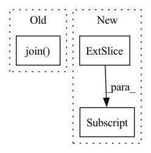

Pattern ID :35688
Before Change
model_description=model_description,
paper_arxiv_id=paper_arxiv_id)
dataset = DetectionDatset(os.path.join( DATA_ROOT, ANNO_SET) , annotation_path)
loader = create_loader(
dataset,After Change
results = []
for index, sample in enumerate(output):
image_id = int(dataset.parser.img_ids[sample_count])
sample[:, 2] -= sample[:, 0]
sample[:, 3] -= sample[:, 1]
for det in sample:
score = float(det[4])In pattern: SUPERPATTERN
Frequency: 5
Non-data size: 3
Instances Fragment ID: 101574304
Project Name: rwightman/efficientdet-pytorch
Commit Name: e18ad8ef0d611210e9df4b26a987338d5d3ff54f
Time: 2020-10-02
Author: rwightman@gmail.com
File Name: sotabench.py
M Class Name: AnonimousClass
N Class Name: AnonimousClass
M Method Name: eval_model(5)
N Method Name: eval_model(5)
M Parent Class:
N Parent Class:
M File Name: sotabench.py
N File Name: sotabench.py
M Start Line: 90
M End Line: 118
N Start Line: 104
N End Line: 137
Before Change
if args.wandb:
wandb.log({"train/loss": loss.item()})
if (i+1) % args.sample_freq == 0:
pred = "".join( dataloader.tokenizer.decode(decoder.generate(torch.LongTensor([args.bos_token]).to(
device), args.max_seq_len, eos_token=args.eos_token, context=encoded[:1].detach())[:-1]).split(" ")) .replace("Ġ", " ").strip()
s = seq["input_ids"][0]
truth = "".join(dataloader.tokenizer.decode(s[1:list(s).index(args.eos_token)]).split(" ")).replace("Ġ", " ").strip()
if args.wandb:After Change
wandb.log({"train/loss": loss.item()})
if (i+1) % args.sample_freq == 0:
num_samples = 4
dec = decoder.generate(torch.LongTensor([args.bos_token]*len(encoded[:num_samples]))[:, None] .to(device), args.max_seq_len,
eos_token=args.pad_token, context=encoded.detach()[:num_samples])
pred = token2str(dec[:num_samples], dataloader.tokenizer)
truth = token2str(seq["input_ids"], dataloader.tokenizer) Fragment ID: 101574300
Project Name: lukas-blecher/latex-ocr
Commit Name: ba220245e394aea309e5e158ba8d6958522a1f07
Time: 2021-02-02
Author: luk.blecher@gmx.de
File Name: train.py
M Class Name: AnonimousClass
N Class Name: AnonimousClass
M Method Name: train(1)
N Method Name: train(1)
M Parent Class:
N Parent Class:
M File Name: train.py
N File Name: train.py
M Start Line: 21
M End Line: 54
N Start Line: 21
N End Line: 56
Before Change
def __getitem__(self, index):
filename = self.imgs[index]
try:
img = self.loader(os.path.join( self.root, filename) )
except:
return torch.zeros((3, 32, 32))
After Change
for view in range(cur_n_views):
imgs[view,:,:,:] = self.loader(os.path.join(self.root, self.cat_model_list[self.cur_idx][0], self.cat_model_list[self.cur_idx][1], filenames[view]))
if self.transform is not None:
imgs[view,:,:,:] = self.transform(imgs[view,:,:,:])
except:
return imgs
Fragment ID: 101574302
Project Name: alex-golts/pytorch-3d-r2n2
Commit Name: 26734669a8887661262dc3f913074922dc7445e8
Time: 2018-05-22
Author: alexgbiz@gmail.com
File Name: dataset.py
M Class Name: Dataset
N Class Name: Dataset
M Method Name: __getitem__(1)
N Method Name: __getitem__(2)
M Parent Class: data.Dataset
N Parent Class: data.Dataset
M File Name: dataset.py
N File Name: dataset.py
M Start Line: 75
M End Line: 84
N Start Line: 90
N End Line: 101
Before Change
// _ = plt.hist(out_img[:, :, 0], bins="auto") // arguments are passed to np.histogram
// plt.title("Histogram with "auto" bins")
// plt.show()
np.save(os.path.join( dump_path, "out.npy") , out_img)
out_img = Image.fromarray(np.uint8(get_uint8_range(out_img)))
out_img.save(os.path.join(dump_path, str(img_id).zfill(img_format[0]) + img_format[1]))After Change
dump_img = np.copy(out_img)
dump_img += np.array(IMAGENET_MEAN_255).reshape((1, 1, 3))
dump_img = np.clip(dump_img, 0, 255).astype("uint8")
cv.imwrite(os.path.join(dump_path, out_img_name), dump_img[:, :, ::-1] )
if should_display:
plt.imshow(np.uint8(get_uint8_range(out_img)))
plt.show() Fragment ID: 101574296
Project Name: gordicaleksa/pytorch-neural-style-transfer
Commit Name: 6856e5796971c3fb5e77c0a798b35e6e106b5bcb
Time: 2020-03-30
Author: gordicaleksa@gmail.com
File Name: utils/utils.py
M Class Name: AnonimousClass
N Class Name: AnonimousClass
M Method Name: save_and_maybe_display(6)
N Method Name: save_and_maybe_display(7)
M Parent Class:
N Parent Class:
M File Name: utils/utils.py
N File Name: utils/utils.py
M Start Line: 61
M End Line: 75
N Start Line: 74
N End Line: 86
Before Change
cls = 2 // covid
else:
cls = 3
seg_path = os.path.join( self.seg_root,data_path.split("/")[-2],data_path.split("/")[-2]+"_"+data_path.split("/")[-1])
volume=sitk.ReadImage(data_path)
data=sitk.GetArrayFromImage(volume)
Mask = sitk.ReadImage(seg_path)After Change
try:
xx, yy, zz = np.where(M > 0)
data = data[min(xx):max(xx), min(yy):max(yy), min(zz):max(zz)]
M = M[min(xx):max(xx), min(yy):max(yy), min(zz):max(zz)]
except:
print(data_path)
//data=np.stack([data,data,data],0) Fragment ID: 101574298
Project Name: chenwwweixiang/opencoviddetector
Commit Name: 6005fac74d087e30405719ad6e3830a53cbed8cb
Time: 2020-04-21
Author: chenwx_thu@foxmail.com
File Name: data/dataset.py
M Class Name: NCPDataset
N Class Name: NCPDataset
M Method Name: __getitem__(2)
N Method Name: __getitem__(2)
M Parent Class: Dataset
N Parent Class: Dataset
M File Name: data/dataset.py
N File Name: data/dataset.py
M Start Line: 34
M End Line: 63
N Start Line: 67
N End Line: 97